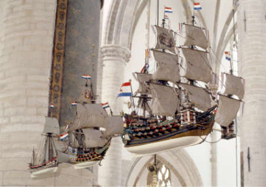

Afbeelding 1.
Mappa Mundi. Op deze grootst bekende middeleeuwse ‘radkaart’ (163 x 137 cm) ligt het oosten boven en Jeruzalem in het midden als centrum van de wereld. Het land is gevuld met fabeldieren en monsters en omgeven door zeeën waarvan de Rode Zee rood is ingekleurd. Het doel van de kaart is de mens te wijzen op zijn christelijke levenswandel en de gevaren die hij tegenkomt als hij daar van afwijkt.
Perkament, de kaart is ondertekend door Richard van Haldingham en Lafford, ca. 1300. Hereford Cathedral, Hereford.